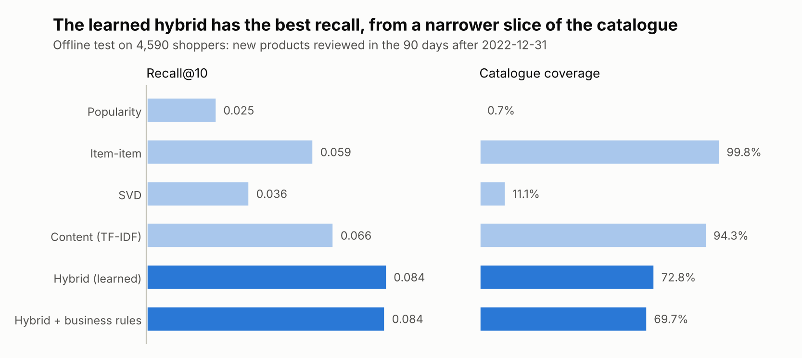

From orders and reviews to answers.
The same code runs on a simulated store that knows the truth and on 91,227 real reviews.
Recommendations, review insights and monitoring for a consumer health store, checked against a simulator that knows the truth, then run on real Amazon reviews.
2026
Recommend. Read. Monitor.A consumer health brand's insights team asks three questions every month. What should each shopper buy next? What are reviewers saying about taste, digestion, effectiveness, value and packaging? Is anything going wrong? ShelfSense answers all three on a simulated store that knows the truth, then on real Amazon reviews.
How it works
The same code runs on a simulated store that knows the truth and on 91,227 real reviews.
01
A store with a hidden truth
02
Four models and a learned re-ranker
03
Aspect sentiment for every review
04
Drift and product alerts, every month
05
An agent that cites review ids
Recommendations, review sentiment and monitoring, each measured against the truth.
Popularity, item-item, SVD and content candidates, re-ranked by a model trained on earlier windows.
01
In stock only, at most 3 per brand, a margin boost: what they cost in recall is measured.
02
Taste, digestion, effectiveness, value and packaging: positive, negative or not mentioned.
03
An LLM labels a few hundred reviews; a TF-IDF student model scores the rest.
04
Each product-aspect's negative share each month, against its own history.
05
Shopper ids are never returned, and saved queries drop groups under 50 shoppers.
06
Results
Recommender numbers from 91,227 real Amazon supplement reviews (2021 to 2023); the alert and the label scores from the simulated store.
recall@10 of the learned hybrid over the best single model, tested on 4,590 real shoppers.
the month the simulated protein powder changed recipe, and the month it was flagged. Nothing else raised an alert.
macro-F1 of the review model trained on keyword labels; 0.985 from just 500 perfect labels.

What to recommend, what reviewers say, and whether anything is going wrong.
Recommendations for every shopper, within business rules.
For e-commerce teams
01
Aspect sentiment by brand, product and month.
For consumer insights
02
An alert the month a product's reviews turn.
For quality and brand teams
03
Pairs with lift, from a saved query.
For category managers
04
Drift in the store's mix, month by month.
For data teams
05
An agent that cites review ids.
For the whole brand team
06
Free under the MIT license. The build takes about a minute. No API key needed.
Clone
git clone https://github.com/faizanreza-cs/shelfsense && cd shelfsenseInstall
make setupBuild, then recommend
make build
shelfsense recommend C000123I build recommenders, review analytics and AI agents like this one for consumer health and CPG teams.
Open to freelance projects and full-time roles.
Both. A simulated store, Fernway Market (240 supplements from 12 brands, 29,040 shoppers, 42,285 reviews), knows the truth, so every method can be scored. A workflow runs the same pipeline on Amazon Reviews 2023: 91,227 supplement reviews.
Labelling every review with an LLM is slow and costly. A few hundred LLM labels can train a TF-IDF model that scores the rest; with perfect labels it reaches macro-F1 0.985 from 500.
No: there was no API key, so the labels came from keyword rules. One command, shelfsense label --labeller llm, measures the LLM.
Shopper ids are replaced before anything is stored, the SQL guard never returns them, and saved queries drop groups under 50 shoppers.
I can run ShelfSense on your orders and reviews, or build the analytics your insights team needs.